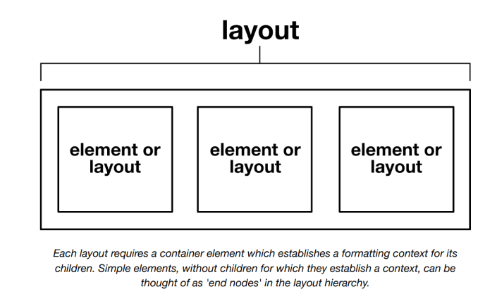
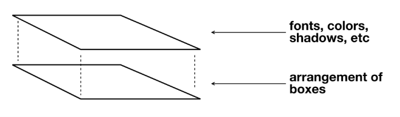
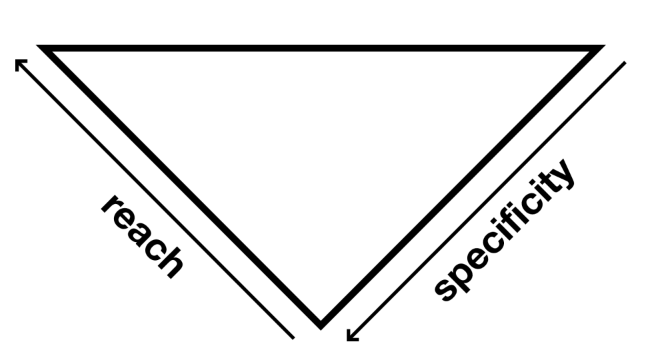
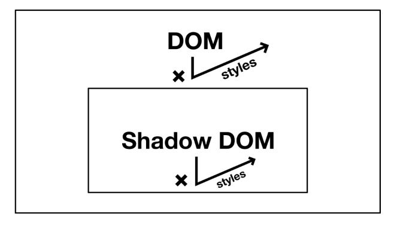
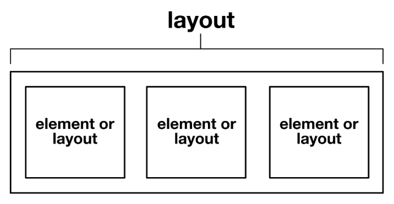

Estilos globales y locales¶
En la sección Composición cubrimos cómo componentes pequeños y no léxicos para layout pueden usarse para crear composites más grandes, pero no todos los estilos dentro de un sistema de diseño eficiente y consistente basado en CSS deberían ser estrictamente basados en componentes. Esta sección contextualizará los componentes de layout en un sistema más grande que incluye estilos globales.
¿Qué son los estilos globales?¶
Cuando la gente habla sobre la naturaleza global de CSS, pueden referirse a una de varias cosas diferentes. Pueden estar refiriéndose a reglas en los selectores :root o <body> que se heredan globalmente (con solo algunas excepciones).
Alternativamente, pueden referirse a usar el selector universal * ↗ para estilizar todos los elementos directamente.
Los selectores de elemento son más específicos, y solo apuntan a los elementos que nombran. Pero siguen siendo "globales" porque pueden alcanzar esos elementos dondequiera que estén situados.
Un uso liberal de selectores de elemento es la característica distintiva de un sistema de diseño integral. Los selectores de elemento se encargan de átomos ↗ genéricos como encabezados, párrafos, enlaces y botones. A diferencia de cuando se usan clases (ver más abajo), los selectores de elemento pueden apuntar al contenido arbitrario y no atribuido producido por editores WYSIWYG↗ y markdown ↗.
Los layouts de Every Layout no exploran ni prescriben estilos para elementos simples; eso es para que tú lo decidas. Es la imbricación de elementos simples en layouts compuestos lo que nos interesa aquí.

Cada layout requiere un elemento contenedor que establece un contexto de formato para sus hijos. Los elementos simples, sin hijos para los cuales establecen un contexto, pueden considerarse como 'nodos finales' en la jerarquía de layout.
Finalmente, los estilos basados en clases, una vez definidos, pueden adherirse a cualquier elemento HTML, en cualquier lugar de un documento. Estos son más portátiles y componibles que los estilos de elemento, pero requieren que el autor afecte el marcado directamente.
<div class="sans-serif">...</div>
<small class="sans-serif">...</small>
<h2 class="sans-serif">...</h2>
Debe apreciarse lo importante que es aprovechar el alcance global de las reglas CSS. CSS te permite aplicar estilos de HTML globalmente, y por categoría (por tipo de elemento, clase, atributo, estado, etc..), en lugar de elemento por elemento. Cuando se utiliza correctamente, es la forma más eficiente de crear cualquier tipo de layout o estética en la web. Cuando las técnicas de estilo global (como las anteriores) se usan apropiadamente, es mucho más fácil separar la marca/estética del layout, y tratar los dos como concerns separados ↗.
Explicacion
Ese párrafo está hablando de una de las ideas más importantes de CSS: aprovechar que una sola regla puede afectar a muchos elementos al mismo tiempo.
Por ejemplo, en lugar de hacer esto:
<h1 style="color: blue;">Título 1</h1>
<h1 style="color: blue;">Título 2</h1>
<h1 style="color: blue;">Título 3</h1>
CSS permite hacer:
Y automáticamente todos los <h1> serán azules. Eso es lo que llaman alcance global.
Aplicar estilos por categoría
También puedes agrupar elementos mediante clases:
<button class="boton">Guardar</button>
<a class="boton">Descargar</a>
<input class="boton" type="submit">
Una sola regla sirve para muchos elementos.
Separar estética y layout
La frase:
separar la marca/estética del layout
significa que puedes tratar por separado:
1. Layout (estructura)
Cómo se acomodan los elementos:
Esto controla la disposición.
2. Estética o marca
Cómo se ven:
Esto controla la apariencia.
De esta forma, si mañana quieres cambiar los colores de toda tu página, no necesitas modificar cada elemento uno por uno. Simplemente cambias:
o
y todo el sitio cambia.
Cuando el texto dice que ambos son concerns separados, quiere decir que:
- Layout → cómo se organizan los elementos.
- Estética (branding) → cómo lucen los elementos.
Mantener estas responsabilidades separadas hace que el CSS sea más limpio, reutilizable y fácil de mantener.
Por ejemplo, una tarjeta podría tener:
.card {
display: flex; /* Layout */
flex-direction: column; /* Layout */
background: white; /* Estética */
border-radius: 8px; /* Estética */
box-shadow: 0 0 10px #0002; /* Estética */
}
Aunque muchos desarrolladores prefieren incluso separar esas responsabilidades en clases distintas:
.flex-column {
display: flex;
flex-direction: column;
}
.surface {
background: white;
border-radius: 8px;
box-shadow: 0 0 10px #0002;
}
Así puedes combinar estructura y apariencia según sea necesario, aprovechando al máximo la naturaleza global y reutilizable de CSS.

Clases de utilidad¶
Como ya dijimos, las clases difieren de los otros métodos de estilo global en términos de su portabilidad: puedes usar clases entre diferentes elementos HTML y sus tipos. Esto nos permite diverger de los estilos heredados, universales y de elemento globalmente.
Por ejemplo, todos nuestros elementos <h2> pueden estar estilizados, por defecto, con un font-size de 2.25rem:
Sin embargo, puede haber casos específicos donde queramos que ese font-size se reduzca ligeramente (quizás el espacio horizontal es limitado, o el encabezado está en un lugar donde debería tener menos peso visual). Si cambiáramos a un elemento <h3> para afectar este cambio visual, haríamos una tontería de la estructura del documento ↗.
En su lugar, podríamos construir un selector más complejo que pertenezca al contexto del <h2> más pequeño:
Si bien esto es mejor que desordenar la estructura del documento, hemos cometido el error de no tener en cuenta el sistema emergente: Hemos resuelto el problema para un elemento específico, en un contexto específico, cuando deberíamos estar resolviendo el problema general (necesidad de ajustar font-size) para cualquier elemento en cualquier contexto. Aquí es donde entran las clases de utilidad.
Usamos una convención de nomenclatura muy precisa, que emula la estructura de declaración CSS: property-name:value. Esto ayuda con el recuerdo de los nombres de las clases de utilidad, especialmente donde el valor se hace eco del valor real, como .text-align:center.
Compartir valores entre elementos y utilidades es un trabajo para las propiedades personalizadas (custom properties) ↗. Observa que hemos hecho las propiedades personalizadas mismas globalmente disponibles adjuntándolas al elemento :root (<html>):
Cada clase de utilidad tiene un sufijo !important para maximizar su especificidad. Las clases de utilidad son para ajustes finales, y no deberían ser anuladas por nada que venga antes que ellas.

Una arquitectura CSS sensata tiene "alcance" (cuántos elementos se ven afectados) inversamente proporcional a la especificidad (qué tan complejos son los selectores). Esto fue formalizado por Harry Roberts como ITCSS, donde IT significa Inverted Triangle (Triángulo Invertido).
Los valores en el ejemplo anterior son solo para ilustración. Para consistencia en todo el diseño, tus tamaños deberían derivarse probablemente de una escala modular. Consulta Modular scale para más información.
⚠ Demasiadas clases de utilidad¶
Algo que recomendamos encarecidamente es no incluir clases de utilidad hasta que las necesites. No quieres enviar a los usuarios datos no utilizados o redundantes. Para este proyecto, mantenemos un archivo helpers.css y agregamos utilidades a medida que encontramos que las necesitamos. Si encontramos que la clase text-align:center no está teniendo efecto, es que no la hemos agregado en el CSS aún — así que la ponemos en nuestro archivo helpers.css para uso presente y futuro.
En un enfoque utility first ↗ de CSS, los estilos heredados, universales y de elemento no se aprovechan realmente. En su lugar, se aplican combinaciones de estilos individuales caso por caso a elementos individuales e independientes. Usando el framework utility-first Tailwind, esto podría resultar — como ejemplifica la propia documentación de Tailwind — en valores de clase como los siguientes:
class="rounded-lg px-4 md:px-5 xl:px-4 py-3 md:py-4 xl:py-3 bg-teal-500 hover:bg-teal-600 md:text-lg xl:text-base text-white font-semibold leading-tight shadow-md"
Puede haber razones, bajo circunstancias específicas, por las que uno querría ir por este camino. Quizás hay una gran cantidad de detalle y disparidad en el diseño visual que se beneficia de tener este tipo de control granular, o quizás quieres prototipar algo rápidamente sin cambiar de contexto entre CSS y HTML.
El enfoque de Every Layout asume que quieres crear robustez y consistencia con el mínimo de intervención manual. Por lo tanto, los conceptos y técnicas aquí expuestos aprovechan axiomas, primitivas y los algoritmos de estilo que se extrapolan de ellos.
Estilos locales o con ámbito (scoped)¶
Notablemente, el atributo/propiedad id (por razones de accesibilidad ↗, sobre todo) solo puede usarse en un elemento HTML por documento. Estilizar a través del selector id está por lo tanto limitado a una instancia.
El selector id tiene una especificidad ↗ muy alta porque se asume que los estilos únicos están destinados a anular estilos genéricos competidores en todos los casos.
Por supuesto, no hay nada más "local" o específico de instancia que aplicar estilos directamente a los elementos usando el atributo/propiedad style:
El único estándar restante para localizar estilos es dentro de Shadow DOM. Al hacer que un elemento sea un shadowRoot, se pueden usar selectores de baja especificidad que solo afectan a los elementos dentro de ese padre.
const elem = document.querySelector('div');
const shadowRoot = elem.attachShadow({mode: 'open'});
shadowRoot.innerHTML = `
<style>
p {
/* ↓ Solo estiliza los <p> dentro del Shadow DOM del elemento */
font-family: sans-serif;
}
</style>
<p>Un párrafo sans-serif</p>
`;
Inconvenientes¶
El selector id, los estilos inline y Shadow DOM tienen todos inconvenientes:
-
Selectores
id: Muchos encuentran que la alta especificidad causa problemas sistémicos. También está la necesidad de inventar el nombre deliden cada caso. Generar dinámicamente una cadena única es a menudo preferible. -
Estilos inline: Una pesadilla de mantenimiento, que es la razón por la que CSS fue concebido antídoto en primer lugar.
-
Shadow DOM: No solo los estilos evitan "filtrarse" fuera de la raíz del Shadow DOM, sino que (la mayoría) de los estilos no pueden entrar tampoco — lo que significa que ya no puedes aprovechar el estilo global.

Lo que necesitamos es una forma de aprovechar simultáneamente el estilo global, pero aplicar estilos locales y específicos de instancia de manera controlada.
Primitivas y props¶
Como se estableció en Composición, el enfoque principal de Every Layout son las primitivas de layout simples que ayudan a organizar elementos/cajas juntos. Estas son las herramientas principales para generar layout y ocupan su lugar entre los estilos globales genéricos y las utilidades.
- Estilos universales (incluyendo heredados)
- Primitivas de layout
- Clases de utilidad
Manifestados como componentes reutilizables, usando la especificación de custom elements ↗, estos layouts pueden usarse globalmente. Pero configuraciones únicas de estos layouts son posibles usando props (propiedades).
Interoperabilidad¶
Los custom elements se usan en lugar de componentes de React, Preact o Vue (que también usan props) en Every Layout porque son nativos y pueden usarse en diferentes frameworks de aplicaciones web. Cada layout también viene con un generador de código para producir solo el código CSS necesario para lograr el layout. Puedes usar esto para crear una primitiva de layout específica para Vue (por ejemplo).
Valores por defecto¶
Cada componente de layout tiene una hoja de estilo adjunta que define sus estilos básicos y por defecto. Por ejemplo, la hoja de estilo del Stack (Stack.css) se ve de la siguiente manera.
Algunas cosas a tener en cuenta:
-
La declaración
display: blockes necesaria ya que los custom elements se renderizan como elementos inline por defecto. Consulta Boxes para más información sobre el comportamiento de elementos block e inline. -
El valor
margin-topes lo que hace que el Stack sea un stack: inserta margen entre una pila vertical de elementos. Por defecto, ese valor de margen coincide con el primer punto en nuestra escala modular:--s1. -
El selector
*se aplica a cualquier elemento, pero nuestro uso de+(combinador de hermano adyacente ↗) está calificado para coincidir con cualquier elemento hijo sucesivo de un<stack-l>(observa el> *). La primitiva de layout es una composición en abstracto, y no debería prescribir el contenido, así que uso*para coincidir con cualquier tipo de elemento hijo que se le dé.

En la definición del custom element en sí, aplicamos el valor por defecto a la propiedad space:
Cada custom element de Every Layout construye una hoja de estilo incrustada basada en los valores de propiedad de la instancia. Es decir, esto…
…se convertiría en esto…
…y generaría esto:
Sin embargo — y esta parte es importante — la cadena Stack-var(--s3) solo representa una configuración única para un layout, no una instancia única. Un elemento <style> con id="Stack-var(--s3)" se usa para servir todas las instancias de <stack-l> que compartan la configuración representada por la cadena Stack-var(--s3). Entre instancias de la misma configuración, lo único que las diferencia es su contenido.
Si bien cada elemento de contenido dentro de una página web debería generalmente ofrecer información única, el layout debería ser consistente y regular, usando patrones, motivos y disposiciones familiares y repetidos. Aprovechar los estilos globales junto con configuraciones de layout controladas resulta en consistencia y cohesión, y con un código mínimo.